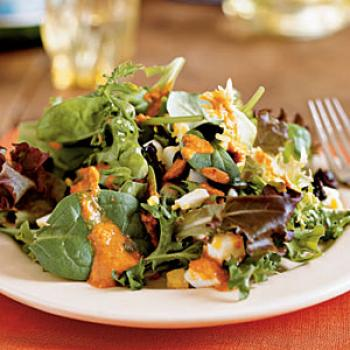

La salade catalane recette
Ingrédients :
- 1 laitue
- 2 tomates
- 2 oignons rouges
- 1 poivrons rouge cuit ou grillé
- Quelques anchois
- Quelques olives
Préparation :
- Lavez soigneusement les légumes. Séchez-les.
- Dans un saladier, mettez la salade.
- Coupez les légumes en morceaux puis ajoutez-les à la salade.
- Ajoutez enfin les anchois. Salez et poivrez selon votre convenance.
- Pour plus de goût, vous pouvez agrémenter votre salade catalane d'une vinaigrette.
- Retrouvez plus de recettes catalanes: aubergine à la catalane, cabillaud braisé à la catalane, merlans à la catalane...